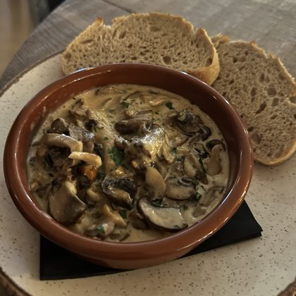

Cancel
New collection
PREVIEW
Things I want to cook again
4 meals
· made by you
NAME
CARD COLOUR
Pick meals
4
selected
Prawn linguine
Custard tart
Squid & chorizo
Calamari & pineapple salsa
Tagliatelle ragù
Tiramisu
Ham & mushroom omelette
Calamari

Creamy mushrooms
Fava & octopus
The whole table
BBQ ribs & corn
Sashimi
Pistachio prawn pasta
Roast beef & Yorkshire pud
Curry
Francesinha
Tagine & couscous
Choose a cover
From your picks
Cover
Cancel
Create collection
 PREVIEWThings I want to cook again4 meals · made by youPREVIEWThings I want to cook again4 meals · made by you
PREVIEWThings I want to cook again4 meals · made by youPREVIEWThings I want to cook again4 meals · made by you